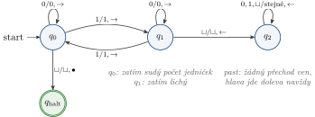
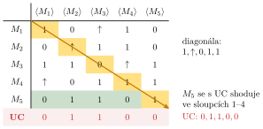
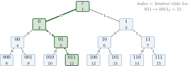
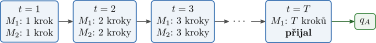
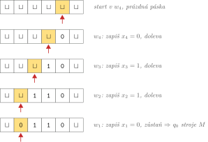
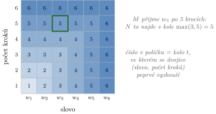
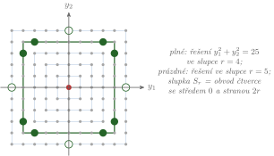

2.4 Úlohy navíc¶
Úlohy procvičují pojmy kapitoly 2: rekurzivní a rekurzivně spočetné jazyky (definice 2.1), spočetnost a diagonalizaci (oddíl 2.1), problém zastavení a redukci s orákulem (oddíl 2.2) a Hilbertův 10. problém (oddíl 2.3). Ke spouštění strojů se používá univerzální stroj s budíkem z oddílu 1.5.
Neoficiální úlohy
Úlohy v tomto oddílu nejsou oficiální zadání předmětu. Jsou to procvičovací úlohy navíc k látce kapitoly; stroje a konstrukce z řešení byly naprogramovány a nasimulovány (stroj z úlohy 2.1 na všech slovech do délky 12, konstrukce z úloh 2.5–2.7 na tisících náhodných malých strojích s omezeným počtem kroků), čísla v úlohách 2.2, 2.3 a 2.8 přepočítal skript a čisté důkazy (věta o doplňku, nespočetnost, nerozhodnutelnost) jsou ověřené jen ručně.
Ve všech úlohách „\(M\) zastaví na \(x\)“ znamená, že výpočet \(M\) na vstupu \(x\) přejde do některého koncového stavu (\(\qhalt\), \(\qA\) nebo \(\qR\)). „\(M\) přijme \(x\)“ znamená \(f_M(x)=1\) (definice 2.1); pro jednoduchost bereme, že stroj výstup \(1\) vydá jako rozhodovací stroj, tj. výpočet skončí v \(\qA\). Vstupní abeceda strojů je \(\{0,1\}\). Jeden krok je jedno použití přechodové funkce \(\delta\) (počítá se i přechod do koncového stavu).
2.4.1 Rozcvička¶
Úloha 2.1 (zastaví do \(k\) kroků?)
Jednopáskový DTS \(M\) nad \(\Sigma=\{0,1\}\) má stavy \(q_0\) (počáteční), \(q_1\), \(q_2\) a \(\qhalt\) a přechody
| stav | čte \(0\) | čte \(1\) | čte \(\blank\) |
|---|---|---|---|
| \(q_0\) | \((q_0,0,\Rgt)\) | \((q_1,1,\Rgt)\) | \((\qhalt,\blank,\Stay)\) |
| \(q_1\) | \((q_1,0,\Rgt)\) | \((q_0,1,\Rgt)\) | \((q_2,\blank,\Lft)\) |
| \(q_2\) | \((q_2,0,\Lft)\) | \((q_2,1,\Lft)\) | \((q_2,\blank,\Lft)\) |
- Odsimulujte \(M\) na vstupech \(0110\) a \(010\).
- Určete jazyk \(H_M=\{x\in\{0,1\}^* \mid M \text{ zastaví na } x\}\) a počet kroků do zastavení.
- Dokažte, že jazyk \(\href{ch-vycisl-problem-zastaveni.html#prob-halt}{\class{woo-pk-prob-halt}{\prob{Halt}}}_{\le k}=\{\enc{M,x,k} \mid M \text{ zastaví na } x \text{ po nejvýše } k \text{ krocích}\}\) (\(k\) zapsané binárně) je rekurzivní. Proč z toho neplyne, že je rekurzivní \(\href{ch-vycisl-problem-zastaveni.html#prob-halt}{\class{woo-pk-prob-halt}{\prob{Halt}}}\)?
- Je rekurzivní jazyk \(\{\enc{M} \mid M \text{ má více než } 5 \text{ stavů}\}\)?
Řešení

Stavový diagram stroje \(M\). Všimni si: ze stavu \(q_2\) nevede žádný přechod do jiného stavu.
a) Konfiguraci zapisujeme jako (stav, pozice hlavy, čtený symbol), pozice \(1\) je první symbol vstupu.
Vstup \(0110\): \((q_0,1,0)\to(q_0,2,1)\to(q_1,3,1)\to(q_0,4,0)\to(q_0,5,\blank)\to\qhalt\). Stroj zastaví po \(5\) krocích.
Vstup \(010\): \((q_0,1,0)\to(q_0,2,1)\to(q_1,3,0)\to(q_1,4,\blank)\to(q_2,3,0)\to(q_2,2,1)\to(q_2,1,0)\to(q_2,0,\blank)\to\cdots\) Ve stavu \(q_2\) stroj každým krokem zůstane v \(q_2\) a posune hlavu doleva, do koncového stavu se tedy už nikdy nedostane – na \(010\) se zacyklí.
b) Ve stavech \(q_0,q_1\) stroj jen čte vstup zleva doprava a pamatuje si paritu počtu přečtených jedniček (\(q_0\) = sudý, \(q_1\) = lichý; každá \(1\) stav přepne, \(0\) ho nemění). Po \(|x|\) krocích stojí na prvním \(\blank\) za vstupem. Je-li počet jedniček sudý, je v \(q_0\) a v kroku \(|x|+1\) zastaví. Je-li lichý, přejde do pasti \(q_2\) a cyklí. Proto
a na \(x\in H_M\) stroj zastaví po přesně \(|x|+1\) krocích. (Simulací ověřeno pro všech \(8191\) slov délky nejvýše \(12\).)
c) Rozhodující stroj \(D\) pro \(\href{ch-vycisl-problem-zastaveni.html#prob-halt}{\class{woo-pk-prob-halt}{\prob{Halt}}}_{\le k}\):
- Není-li vstup ve tvaru \(\enc{M,x,k}\) (správný zápis stroje, slovo, binární číslo), přejdi do \(\qR\).
- Zapiš \(k\) na pomocnou pásku jako budík a simuluj univerzálním strojem \(M\) na \(x\); po každém simulovaném kroku sniž budík o \(1\).
- Přejde-li simulovaný stroj do koncového stavu, přejdi do \(\qA\). Klesne-li budík na \(0\) dřív, přejdi do \(\qR\).
Vždy zastaví: simulujeme nejvýše \(k\) kroků a každý stojí konečně mnoho kroků \(D\) (podle důsledku 1.9 celkem \(O(k\log k)\) pro pevné \(M\), budík jen konstantní zpomalení). Správnost: \(D\) přijme právě tehdy, když \(M\) dojde do koncového stavu nejpozději v kroku \(k\), což je definice jazyka. Pro náš stroj: \(\enc{M,0110,5}\) přijme, \(\enc{M,0110,4}\) zamítne (budík doběhne o krok dřív) a \(\enc{M,010,100}\) zamítne po \(100\) simulovaných krocích.
Proč ne \(\href{ch-vycisl-problem-zastaveni.html#prob-halt}{\class{woo-pk-prob-halt}{\prob{Halt}}}\): platí \(\href{ch-vycisl-problem-zastaveni.html#prob-halt}{\class{woo-pk-prob-halt}{\prob{Halt}}}=\bigcup_{k}\href{ch-vycisl-problem-zastaveni.html#prob-halt}{\class{woo-pk-prob-halt}{\prob{Halt}}}_{\le k}\), ale \(D\) potřebuje \(k\) dostat. Rozhodnout \(\href{ch-vycisl-problem-zastaveni.html#prob-halt}{\class{woo-pk-prob-halt}{\prob{Halt}}}\) bychom uměli, jen kdybychom z \(\enc{M,x}\) uměli spočítat mez \(b\) s vlastností „když \(M\) na \(x\) zastaví, pak do \(b\) kroků“ – pak by stačilo spustit \(D\) na \(\enc{M,x,b}\). Taková spočitatelná mez tedy podle věty 2.5 neexistuje. U stroje \(M\) výše jsme cyklení dokázali úvahou (past \(q_2\)), ne simulací; obecný postup, který by to uměl pro každý stroj, neexistuje.
d) Ano. Jde o vlastnost zápisu stroje, ne jeho výpočtu: stroj zkontroluje, že vstup je správný zápis \(\enc{M}\), spočítá stavy v (konečném) seznamu \(Q\) a porovná s \(5\). Vždy zastaví, nic nespouští. Nerozhodnutelné budou až otázky na chování stroje (úlohy 2.5–2.7). Pozor, „\(M\) má více než 5 stavů“ není vlastnost jazyka \(L_M\): přidáním nedosažitelných stavů dostaneme ke každému stroji stroj se stejným jazykem a libovolně mnoha stavy.
Úloha 2.2 (diagonála na konkrétní tabulce)
Prvních pět strojů \(M_1,\dots,M_5\) posloupnosti z důkazu věty 2.3 dává na kódech \(\enc{M_1},\dots,\enc{M_5}\) tyto výstupy (\(\uparrow\) znamená, že se stroj zacyklí):
| \(\enc{M_1}\) | \(\enc{M_2}\) | \(\enc{M_3}\) | \(\enc{M_4}\) | \(\enc{M_5}\) | |
|---|---|---|---|---|---|
| \(M_1\) | \(1\) | \(0\) | \(\uparrow\) | \(1\) | \(0\) |
| \(M_2\) | \(0\) | \(\uparrow\) | \(1\) | \(1\) | \(0\) |
| \(M_3\) | \(1\) | \(1\) | \(0\) | \(\uparrow\) | \(1\) |
| \(M_4\) | \(\uparrow\) | \(0\) | \(1\) | \(1\) | \(1\) |
| \(M_5\) | \(0\) | \(1\) | \(1\) | \(0\) | \(1\) |
- Spočítejte \(\mathrm{UC}(\enc{M_1}),\dots,\mathrm{UC}(\enc{M_5})\) (definice 2.2).
- Pro každé \(M_i\) najděte sloupec, ve kterém se jeho řádek liší od \(\href{ch-vycisl-nepocitatelna-funkce-uc.html#def-uc}{\class{woo-pk-def-uc}{\prob{UC}}}\). Ve kterých sloupcích se liší \(M_5\)?
- Kolik je \(\mathrm{UC}(\alpha)\), když \(\alpha\) není zápis žádného DTS?
- Dokažte, že funkce \(d(\alpha)=1\), je-li \(\alpha\) zápis DTS a \(M_\alpha(\alpha)=1\), a \(d(\alpha)=0\) jinak, není počitatelná.
Řešení
a) Podle definice je \(\mathrm{UC}(\enc{M_i})=0\) přesně když \(M_i(\enc{M_i})=1\), jinak \(1\). Na diagonále stojí \(1,\uparrow,0,1,1\), tedy
U \(M_2\) pozor: stroj na \(\enc{M_2}\) cyklí, takže \(M_2(\enc{M_2})\neq1\) a \(\mathrm{UC}(\enc{M_2})=1\).

Tabulka z úlohy s diagonálou (žlutě) a řádkem \(\href{ch-vycisl-nepocitatelna-funkce-uc.html#def-uc}{\class{woo-pk-def-uc}{\prob{UC}}}\). Zeleně úsek, kde se \(M_5\) s \(\href{ch-vycisl-nepocitatelna-funkce-uc.html#def-uc}{\class{woo-pk-def-uc}{\prob{UC}}}\) shoduje.
b) Ve sloupci \(i\) se \(M_i\) od \(\href{ch-vycisl-nepocitatelna-funkce-uc.html#def-uc}{\class{woo-pk-def-uc}{\prob{UC}}}\) liší vždy – tak je \(\href{ch-vycisl-nepocitatelna-funkce-uc.html#def-uc}{\class{woo-pk-def-uc}{\prob{UC}}}\) postavená: \(M_1(\enc{M_1})=1\neq0\), \(M_2(\enc{M_2})\) nemá výsledek (cyklí) \(\neq1\), \(M_3(\enc{M_3})=0\neq1\), \(M_4(\enc{M_4})=1\neq0\), \(M_5(\enc{M_5})=1\neq0\). Řádek \(M_5\) je \((0,1,1,0,1)\) a \(\href{ch-vycisl-nepocitatelna-funkce-uc.html#def-uc}{\class{woo-pk-def-uc}{\prob{UC}}}\) je \((0,1,1,0,0)\): liší se jen ve sloupci \(5\). Diagonála tedy nezaručuje, že se řádky od \(\href{ch-vycisl-nepocitatelna-funkce-uc.html#def-uc}{\class{woo-pk-def-uc}{\prob{UC}}}\) liší všude – stačí jeden sloupec, ale ten je zaručený pro každý stroj. (Ostatní stroje se liší i jinde: \(M_1\) ve sloupcích \(1\)–\(4\), \(M_2\) ve \(2,4\), \(M_3\) v \(1,3,4,5\), \(M_4\) v \(1,2,4,5\).)
c) \(\mathrm{UC}(\alpha)=1\) (druhá větev definice: \(\alpha\) není zápis DTS).
d) Pro každé \(\alpha\) platí \(\mathrm{UC}(\alpha)=1-d(\alpha)\): je-li \(\alpha\) zápis DTS a \(M_\alpha(\alpha)=1\), je \(d(\alpha)=1\) a \(\mathrm{UC}(\alpha)=0\); ve všech ostatních případech je \(d(\alpha)=0\) a \(\mathrm{UC}(\alpha)=1\). (V tabulce \(d=(1,0,0,1,1)\).) Kdyby nějaký stroj \(D\) počítal \(d\) (vždy zastaví s výstupem \(0\) nebo \(1\)), stroj „spusť \(D\) a výstup prohoď \(0\leftrightarrow1\)“ by vždy zastavil a počítal \(\href{ch-vycisl-nepocitatelna-funkce-uc.html#def-uc}{\class{woo-pk-def-uc}{\prob{UC}}}\) – spor s větou 2.3. Funkce \(d\) proto počitatelná není. Rozdíl mezi \(d\) a „opsáním diagonály“ je v tom, že \(d\) musí vrátit \(0\) i tam, kde \(M_\alpha\) na \(\alpha\) cyklí.
Úloha 2.3 (strojů je spočetně, jazyků nespočetně)
Slova z \(\{0,1\}^*\) seřadíme do posloupnosti \(w_1=\varepsilon, w_2=0, w_3=1, w_4=00,\dots\): nejdřív podle délky, stejně dlouhá slova lexikograficky.
- Najděte vzorec pro index slova \(w\), určete index slova \(0110\) a slovo \(w_{100}\).
- Odvoďte, že Turingových strojů je spočetně mnoho.
- Dokažte diagonalizací, že jazyků nad \(\{0,1\}\) je nespočetně mnoho.
- Rozhodněte, které z množin jsou spočetné: rekurzivní jazyky; konečné jazyky; všechny funkce \(f\colon\{0,1\}^*\to\{0,1\}\); počitatelné funkce \(f\colon\{0,1\}^*\to\{0,1\}\). Co z toho plyne pro rekurzivně spočetné jazyky?
Řešení
a) Index \(w\) (od \(1\)) je číslo, jehož binární zápis je \(1w\) (před slovo připíšeme jedničku):
kde \(\mathrm{val}(w)\) je hodnota \(w\) jako binárního čísla. Důvod: slov kratších než \(n=|w|\) je \(2^0+2^1+\dots+2^{n-1}=2^n-1\) a mezi slovy délky \(n\) je \(w\) lexikograficky na místě \(\mathrm{val}(w)+1\), celkem \(2^n-1+\mathrm{val}(w)+1\). Zobrazení \(w\mapsto\mathrm{ind}(w)\) je bijekce \(\{0,1\}^*\to\{1,2,3,\dots\}\) (každé číslo \(\ge1\) má binární zápis začínající jedničkou), takže každé slovo má konečný index a každý index patří jednomu slovu.
\(\mathrm{ind}(0110)=2^4+6=22\) (binárně \(10110\)). Naopak \(100=1100100_2\), odtrhneme úvodní jedničku: \(w_{100}=100100\) (kontrola \(2^6+36=100\)).

Slova do délky \(3\) ve stromu; čísla pod slovy jsou indexy. Pořadí „po patrech zleva doprava“ je přesně pořadí podle délky a lexikograficky. Zeleně cesta ke slovu \(011\).
b) Každý TS je popsán konečným řetězcem \(\enc{M}\in\{0,1\}^*\) a různé stroje mají různé zápisy. Zobrazení \(M\mapsto\mathrm{ind}(\enc{M})\) je tedy prosté zobrazení do \(\{1,2,\dots\}\) a strojů je spočetně mnoho. Seřazením strojů podle indexu zápisu vznikne posloupnost \(M_1,M_2,\dots\) z důkazu věty 2.3.
c) Sporem: nechť \(L_1,L_2,L_3,\dots\) jsou všechny jazyky nad \(\{0,1\}\). Definujme
Pro každé \(i\) platí \(w_i\in L_D\iff w_i\notin L_i\), takže \(L_D\) a \(L_i\) se liší na slově \(w_i\) a \(L_D\neq L_i\). \(L_D\) je ale jazyk nad \(\{0,1\}\), a tedy v seznamu být musí – spor. Je to stejná tabulka jako na obr. 2.2: řádek \(i\) je charakteristický vektor \(L_i\) (ve sloupci \(j\) je \(1\), když \(w_j\in L_i\)) a \(L_D\) je negace diagonály.
d)
- Rekurzivní jazyky – spočetné. Každý má rozhodující stroj; přiřadíme mu nejmenší index takového stroje. Různé jazyky mají různé stroje, zobrazení je prosté.
- Konečné jazyky – spočetné. Každý konečný jazyk je rekurzivní (stroj má seznam slov zabudovaný v přechodové funkci), takže jich je nejvýše tolik co rekurzivních; nekonečně mnoho jich je (\(\{w_1\},\{w_2\},\dots\)).
- Všechny funkce \(\{0,1\}^*\to\{0,1\}\) – nespočetné. Funkce \(f\) odpovídá jazyku \(\{w\mid f(w)=1\}\) a naopak (charakteristická funkce), jde o bijekci; jazyků je podle (c) nespočetně.
- Počitatelné funkce – spočetné. Každou počítá nějaký stroj a strojů je spočetně.
Rekurzivně spočetné jazyky jsou tvaru \(L_M\), je jich tedy také nejvýše spočetně. Jazyků je nespočetně, takže existuje jazyk, který není ani rekurzivně spočetný (a takových je dokonce nespočetně mnoho). Konkrétní příklad je \(\overline{\href{ch-vycisl-problem-zastaveni.html#prob-halt}{\class{woo-pk-prob-halt}{\prob{Halt}}}}\) z úlohy 2.4.
2.4.2 Důkazy nerozhodnutelnosti¶
Úloha 2.4 (jazyk a jeho doplněk)
Pro jazyk \(L\subseteq\Sigma^*\) označme \(\overline{L}=\Sigma^*\setminus L\).
- Dokažte: jsou-li \(L\) i \(\overline{L}\) rekurzivně spočetné, je \(L\) rekurzivní. (nad rámec přednášky)
- Dokažte, že je-li \(L\) rekurzivní, je rekurzivní i \(\overline{L}\).
- Odvoďte, že \(\overline{\href{ch-vycisl-problem-zastaveni.html#prob-halt}{\class{woo-pk-prob-halt}{\prob{Halt}}}}\) není rekurzivně spočetný.
- Je třída rekurzivně spočetných jazyků uzavřená na doplněk?
Řešení
a) Nechť \(M_1\) přijímá \(L\) a \(M_2\) přijímá \(\overline{L}\) (na slovech mimo svůj jazyk smí zastavit s jiným výstupem než \(1\) nebo cyklit). Pustit nejdřív \(M_1\) a pak \(M_2\) nejde: na \(x\notin L\) se \(M_1\) může zacyklit a na \(M_2\) nikdy nedojde. Stroje proto pouštíme střídavě po kouscích a každý kousek hlídá budík. Stroj \(D\) na vstupu \(x\) opakuje pro \(t=1,2,3,\dots\):
- simuluj \(M_1\) na \(x\) po nejvýše \(t\) kroků; přijal-li, přejdi do \(\qA\);
- simuluj \(M_2\) na \(x\) po nejvýše \(t\) kroků; přijal-li, přejdi do \(\qR\).
(Zastaví-li některý stroj s jiným výstupem než \(1\), nic se neděje – tím o \(x\) nic neříká.)

Střídavá simulace pro \(x\in L\), kterou \(M_1\) přijme po \(T\) krocích. Každé kolo skončí díky budíku (kapitola 1); dřív než v kole \(T\) zamítnout nemůžeme, protože \(M_2\) přijímá jen slova z \(\overline{L}\). Pro \(x\notin L\) je obrázek stejný, jen přijme \(M_2\) a výsledek je \(\qR\). Střídání simulací je technika (nad rámec přednášky).
Vždy zastaví: každé \(x\) leží v \(L\), nebo v \(\overline{L}\). Je-li \(x\in L\), přijme ho \(M_1\) po nějakých \(T\) krocích, takže nejpozději v kole \(t=T\) dojde na \(\qA\). Je-li \(x\in\overline{L}\), přijme ho \(M_2\) po nějakých \(T'\) krocích a nejpozději v kole \(T'\) dojde na \(\qR\). Každé kolo je konečné.
Správnost: do \(\qA\) vedou jen přijetí strojem \(M_1\), a to nastane jen pro \(x\in L\); do \(\qR\) jen přijetí strojem \(M_2\), tedy jen pro \(x\notin L\). Stroj tedy vždy zastaví a přijímá přesně \(L\) – \(L\) je rekurzivní.
b) Stroj \(D\) rozhoduje \(L\) a vždy zastaví v \(\qA\) nebo \(\qR\). Prohodíme-li v jeho přechodové funkci role \(\qA\) a \(\qR\), nový stroj vždy zastaví a přijme přesně slova, která \(D\) zamítl, tedy \(\overline{L}\).
c) \(\href{ch-vycisl-problem-zastaveni.html#prob-halt}{\class{woo-pk-prob-halt}{\prob{Halt}}}\) je rekurzivně spočetný (věta 2.5). Kdyby byl rekurzivně spočetný i \(\overline{\href{ch-vycisl-problem-zastaveni.html#prob-halt}{\class{woo-pk-prob-halt}{\prob{Halt}}}}\), byl by podle (a) \(\href{ch-vycisl-problem-zastaveni.html#prob-halt}{\class{woo-pk-prob-halt}{\prob{Halt}}}\) rekurzivní – spor s větou 2.5. (\(\overline{\href{ch-vycisl-problem-zastaveni.html#prob-halt}{\class{woo-pk-prob-halt}{\prob{Halt}}}}\) obsahuje i řetězce, které nejsou zápisem \(\enc{M,x}\); na úvaze to nic nemění.)
d) Není: \(\href{ch-vycisl-problem-zastaveni.html#prob-halt}{\class{woo-pk-prob-halt}{\prob{Halt}}}\) je rekurzivně spočetný, jeho doplněk podle (c) ne. Dohromady s (a) a (b): \(L\) je rekurzivní, právě když \(L\) i \(\overline{L}\) jsou rekurzivně spočetné (pro směr \(\Rightarrow\) stačí, že rekurzivní jazyk je i rekurzivně spočetný a podle (b) je rekurzivní i doplněk). Proto na obr. 2.1 leží \(\overline{\href{ch-vycisl-problem-zastaveni.html#prob-halt}{\class{woo-pk-prob-halt}{\prob{Halt}}}}\) mimo rekurzivně spočetné jazyky.
Úloha 2.5 (zastavení na prázdném vstupu)
Uvažujme jazyk \(\href{ch-vycisl-problem-zastaveni.html#prob-halt}{\class{woo-pk-prob-halt}{\prob{Halt}}}_\varepsilon=\{\enc{M} \mid M \text{ zastaví na prázdném vstupu } \varepsilon\}\).
- Ukažte, že \(\href{ch-vycisl-problem-zastaveni.html#prob-halt}{\class{woo-pk-prob-halt}{\prob{Halt}}}_\varepsilon\) je rekurzivně spočetný.
- Dokažte, že \(\href{ch-vycisl-problem-zastaveni.html#prob-halt}{\class{woo-pk-prob-halt}{\prob{Halt}}}_\varepsilon\) není rekurzivní. Nápověda: ke stroji \(M\) a slovu \(x\) sestrojte stroj, který si \(x\) na prázdnou pásku napíše sám.
- Totéž pro \(A_\varepsilon=\{\enc{M} \mid M \text{ přijme } \varepsilon\}\).
Řešení
Redukce s orákulem: \(\href{ch-vycisl-problem-zastaveni.html#prob-halt}{\class{woo-pk-prob-halt}{\prob{Halt}}}\) \(\to\) \(\href{ch-vycisl-problem-zastaveni.html#prob-halt}{\class{woo-pk-prob-halt}{\prob{Halt}}}_\varepsilon\). Jak: ze vstupu \(\enc{M,x}\) sestrojíme stroj \(M_x\), který na prázdnou pásku zapíše \(x\) a pak se chová jako \(M\); jedinou otázkou na \(\enc{M_x}\) zjistíme, zda \(M\) zastaví na \(x\).
a) Univerzální stroj ověří, že vstup je zápis \(\enc{M}\), a simuluje \(M\) na \(\varepsilon\); skončí-li simulace, přijme. Pokud \(M\) na \(\varepsilon\) cyklí, cyklí i simulace – u přijímání je to dovoleno.
b) Konstrukce. Nechť \(x=x_1x_2\cdots x_n\). Stroj \(M_x\) má všechny stavy a přechody stroje \(M\) (přejmenované, aby se nepletly s novými) a navíc nové stavy \(w_n,w_{n-1},\dots,w_1\); počáteční je \(w_n\):
- ve stavu \(w_i\) pro \(i\ge2\) při libovolném čteném symbolu: zapiš \(x_i\), posuň hlavu doleva, přejdi do \(w_{i-1}\);
- ve stavu \(w_1\): zapiš \(x_1\), hlava zůstane (\(\Stay\)), přejdi do počátečního stavu \(q_0\) stroje \(M\).
Pro \(n=0\) je \(M_x=M\).

Prvních \(n=4\) kroků stroje \(M_x\) pro \(x=0110\) na prázdném vstupu. Po nich je na pásce \(x\) obklopené prázdnými symboly a hlava je na \(x_1\) – přesně počáteční konfigurace \(M\) na \(x\).
b) Proč to funguje. Na vstupu \(\varepsilon\) udělá \(M_x\) nejdřív \(n\) kroků zápisu a skončí v konfiguraci: stav \(q_0\), na pásce \(x\) a jinak prázdno, hlava na \(x_1\). To je počáteční konfigurace \(M\) na \(x\), jen posunutá na pásce – a na posunutí nezáleží, páska je oboustranně nekonečná a stroj absolutní polohu nezná. Odtud \(M_x\) dělá krok po kroku totéž co \(M\) na \(x\). Tedy
a když \(M\) na \(x\) cyklí, cyklí i \(M_x\) na \(\varepsilon\). Zápis \(\enc{M_x}\) se z \(\enc{M}\) a \(x\) spočítá jednoduchým algoritmem (opsat tabulku \(M\), přidat \(n\) stavů a jejich přechody), který vždy skončí.
b) Spor. Nechť \(H_\varepsilon\) je stroj, který rozhoduje \(\href{ch-vycisl-problem-zastaveni.html#prob-halt}{\class{woo-pk-prob-halt}{\prob{Halt}}}_\varepsilon\) (vždy zastaví). Sestrojíme stroj \(H\) pro \(\href{ch-vycisl-problem-zastaveni.html#prob-halt}{\class{woo-pk-prob-halt}{\prob{Halt}}}\): není-li vstup ve tvaru \(\enc{M,x}\), zamítni; jinak spočítej \(\enc{M_x}\), spusť na něm \(H_\varepsilon\) a vrať jeho odpověď. \(H\) vždy zastaví a
takže \(H\) rozhoduje \(\href{ch-vycisl-problem-zastaveni.html#prob-halt}{\class{woo-pk-prob-halt}{\prob{Halt}}}\) – spor s větou 2.5. Proto \(\href{ch-vycisl-problem-zastaveni.html#prob-halt}{\class{woo-pk-prob-halt}{\prob{Halt}}}_\varepsilon\) není rekurzivní (je jen rekurzivně spočetný).
c) Rekurzivně spočetný: simuluj \(M\) na \(\varepsilon\) a přijmi, skončí-li simulace v \(\qA\). Nerozhodnutelnost: stroj \(M'_x\) vznikne z \(M_x\) tak, že všechny koncové stavy stroje \(M\) (\(\qhalt\), \(\qA\), \(\qR\)) nahradíme stavem \(\qA\). Pak \(M'_x\) přijme \(\varepsilon\), právě když \(M\) zastaví na \(x\), a stejný spor jako v (b) ukazuje, že \(A_\varepsilon\) rekurzivní není.
Poznámka. Orákulum se tu ptáme jen jednou a jeho odpověď vracíme beze změny. Taková redukce je zobrazení \(\enc{M,x}\mapsto\enc{M_x}\) jako v kapitole 5 (vstupy, které nejsou tvaru \(\enc{M,x}\), zobrazíme na zápis pevného stroje, který na \(\varepsilon\) cyklí), a protože \(\enc{M_x}\) se spočítá v čase polynomiálním v \(|\enc{M}|+|x|\), je to dokonce \(\href{ch-vycisl-problem-zastaveni.html#prob-halt}{\class{woo-pk-prob-halt}{\prob{Halt}}}\mathrel{\href{../ch-redukce/ch-redukce-jak-porovnat-slozitost-dvou-problemu.html#def-redukce}{\class{woo-pk-def-redukce}{\redp}}}\href{ch-vycisl-problem-zastaveni.html#prob-halt}{\class{woo-pk-prob-halt}{\prob{Halt}}}_\varepsilon\) (nad rámec přednášky).
Úloha 2.6 (prázdný jazyk)
Uvažujme \(\href{#un-2-6}{\class{woo-pk-pojem-empty}{\prob{Empty}}}=\{\enc{M} \mid L_M=\emptyset\}\) (stroj nepřijme žádné slovo).
- Dokažte, že \(\href{#un-2-6}{\class{woo-pk-pojem-empty}{\prob{Empty}}}\) není rekurzivní.
- Dokažte, že doplněk \(\overline{\href{#un-2-6}{\class{woo-pk-pojem-empty}{\prob{Empty}}}}\) (řetězce, které nejsou zápisem stroje, a zápisy strojů s \(L_M\neq\emptyset\)) je rekurzivně spočetný. Pozor: stroj se na některých slovech může zacyklit.
- Je \(\href{#un-2-6}{\class{woo-pk-pojem-empty}{\prob{Empty}}}\) rekurzivně spočetný? (nad rámec přednášky)
Řešení
Redukce s orákulem: \(\href{ch-vycisl-problem-zastaveni.html#prob-halt}{\class{woo-pk-prob-halt}{\prob{Halt}}}\) \(\to\) \(\href{#un-2-6}{\class{woo-pk-pojem-empty}{\prob{Empty}}}\). Jak: ze vstupu \(\enc{M,x}\) sestrojíme stroj \(M'\), který vstup smaže, napíše si \(x\), spustí \(M\) a po jeho zastavení přijme; pak \(L_{M'}=\emptyset\), právě když \(M\) na \(x\) nezastaví, a stačí obrátit odpověď orákula na \(\enc{M'}\).
a) Konstrukce \(M'\). Na vstupu \(w\):
- Smaž vstup: ve stavu \(e\) při čtení \(0\) nebo \(1\) zapiš \(\blank\) a jdi doprava; při čtení \(\blank\) přejdi (bez pohybu) do \(w_n\) (pro \(x=\varepsilon\) rovnou do \(q_0\) stroje \(M\)). Po \(|w|+1\) krocích je páska celá prázdná.
- Napiš \(x\): stavy \(w_n,\dots,w_1\) přesně jako v úloze 2.5 (\(n\) kroků).
- Spusť \(M\): přechody stroje \(M\), přičemž každý jeho koncový stav (\(\qhalt\), \(\qA\), \(\qR\)) nahradíme stavem \(\qA\) stroje \(M'\).
Po kroku 1 je stav pásky stejný pro každé \(w\), takže dál se \(M'\) chová na všech vstupech stejně. Zastaví-li \(M\) na \(x\) po \(t\) krocích, přijme \(M'\) každé \(w\) po \(|w|+1+n+t\) krocích, tedy \(L_{M'}=\{0,1\}^*\). Cyklí-li \(M\) na \(x\), cyklí \(M'\) na každém \(w\) a \(L_{M'}=\emptyset\). Stav \(\qR\) stroj \(M'\) nepoužívá. Krok 1 je nutný: bez smazání by na pásce zůstaly zbytky \(w\) a \(M\) by nepočítal na čistém \(x\).
a) Spor. Nechť \(E\) rozhoduje \(\href{#un-2-6}{\class{woo-pk-pojem-empty}{\prob{Empty}}}\). Stroj \(H\) pro \(\href{ch-vycisl-problem-zastaveni.html#prob-halt}{\class{woo-pk-prob-halt}{\prob{Halt}}}\): není-li vstup ve tvaru \(\enc{M,x}\), zamítni; jinak spočítej \(\enc{M'}\) a spusť \(E\). Odpoví-li \(E\) \(\ANO\) (\(L_{M'}=\emptyset\)), zamítni; odpoví-li \(\NE\), přijmi. \(H\) vždy zastaví a
takže \(H\) rozhoduje \(\href{ch-vycisl-problem-zastaveni.html#prob-halt}{\class{woo-pk-prob-halt}{\prob{Halt}}}\) – spor s větou 2.5.
b) Stroj \(N\): není-li vstup zápis stroje, přijmi. Jinak pro \(t=1,2,3,\dots\) simuluj \(M\) na každém ze slov \(w_1,\dots,w_t\) (pořadí z úlohy 2.3) po nejvýše \(t\) kroků; přijme-li \(M\) některé z nich, přijmi. Prostě zkoušet \(w_1\), pak \(w_2\), … do konce nejde: na \(w_1\) se \(M\) může zacyklit a na \(w_2\in L_M\) bychom nedošli.
Správnost: Je-li \(L_M\neq\emptyset\), vezmeme \(w_i\in L_M\), které \(M\) přijme po \(s\) krocích. V kole \(t=\max(i,s)\) je \(w_i\) mezi zkoušenými slovy a \(t\ge s\) kroků stačí, takže \(N\) přijme. Je-li \(L_M=\emptyset\), \(N\) nikdy nepřijme (cyklí, což je u přijímání dovoleno). Každé kolo je konečné (\(t\) slov, každé nejvýše \(t\) kroků). Tedy \(N\) přijímá přesně \(\overline{\href{#un-2-6}{\class{woo-pk-pojem-empty}{\prob{Empty}}}}\).

Proč stroj \(N\) nic nevynechá: každá dvojice (slovo \(w_i\), počet kroků \(s\)) přijde na řadu v kole \(\max(i,s)\) (políčka se stejným číslem tvoří „háky“).
c) Není. Kdyby byl, byly by \(\href{#un-2-6}{\class{woo-pk-pojem-empty}{\prob{Empty}}}\) i jeho doplněk rekurzivně spočetné (b) a podle úlohy 2.4(a) by \(\href{#un-2-6}{\class{woo-pk-pojem-empty}{\prob{Empty}}}\) byl rekurzivní – spor s (a).
2.4.3 Těžší úlohy¶
Úloha 2.7 (ekvivalence dvou strojů)
Uvažujme \(\href{#un-2-7}{\class{woo-pk-pojem-eq}{\prob{Eq}}}=\{\enc{M_1,M_2} \mid L_{M_1}=L_{M_2}\}\).
- Dokažte, že \(\href{#un-2-7}{\class{woo-pk-pojem-eq}{\prob{Eq}}}\) není rekurzivní.
- Dokažte, že \(\href{#un-2-7}{\class{woo-pk-pojem-eq}{\prob{Eq}}}\) není ani rekurzivně spočetný. (nad rámec přednášky)
- Dokažte, že ani \(\overline{\href{#un-2-7}{\class{woo-pk-pojem-eq}{\prob{Eq}}}}\) není rekurzivně spočetný. (nad rámec přednášky)
Řešení
Redukce s orákulem: \(\href{#un-2-6}{\class{woo-pk-pojem-empty}{\prob{Empty}}}\) \(\to\) \(\href{#un-2-7}{\class{woo-pk-pojem-eq}{\prob{Eq}}}\). Jak: zápis \(\enc{M}\) zobrazíme na \(\enc{M,M_\emptyset}\), kde \(M_\emptyset\) nepřijme nic, a vrátíme odpověď orákula beze změny.
a) Stroj \(M_\emptyset\) má jediný stav \(z\) a pro každý symbol \(s\) přechod \(\delta(z,s)=(\qR,s,\Stay)\); v prvním kroku zamítne, \(L_{M_\emptyset}=\emptyset\). Pro každý stroj \(M\) platí
Kdyby stroj \(Q\) rozhodoval \(\href{#un-2-7}{\class{woo-pk-pojem-eq}{\prob{Eq}}}\), stroj „není-li vstup zápis stroje, zamítni; jinak spusť \(Q\) na \(\enc{M,M_\emptyset}\) a vrať jeho odpověď“ by vždy zastavil a rozhodoval \(\href{#un-2-6}{\class{woo-pk-pojem-empty}{\prob{Empty}}}\) – spor s úlohou 2.6(a).
b) Stejná konstrukce přenáší i přijímání, protože odpověď neobracíme. Kdyby stroj \(R\) přijímal \(\href{#un-2-7}{\class{woo-pk-pojem-eq}{\prob{Eq}}}\) (na slovech mimo smí cyklit), stroj „není-li vstup zápis stroje, zamítni; jinak spusť \(R\) na \(\enc{M,M_\emptyset}\)“ by přijímal přesně \(\href{#un-2-6}{\class{woo-pk-pojem-empty}{\prob{Empty}}}\): přijme, právě když \(R\) přijme \(\enc{M,M_\emptyset}\), tj. právě když \(L_M=\emptyset\). Pak by \(\href{#un-2-6}{\class{woo-pk-pojem-empty}{\prob{Empty}}}\) byl rekurzivně spočetný – spor s úlohou 2.6(c).
c) Vezmeme stroj \(M'\) z úlohy 2.6 (ten má \(L_{M'}=\{0,1\}^*\), zastaví-li \(M\) na \(x\), jinak \(\emptyset\)) a stroj \(M_{\Sigma^*}\), který v prvním kroku přejde do \(\qA\), tedy \(L_{M_{\Sigma^*}}=\{0,1\}^*\). Pak
neboli \(\enc{M,x}\notin\href{ch-vycisl-problem-zastaveni.html#prob-halt}{\class{woo-pk-prob-halt}{\prob{Halt}}}\iff\enc{M',M_{\Sigma^*}}\in\overline{\href{#un-2-7}{\class{woo-pk-pojem-eq}{\prob{Eq}}}}\). Kdyby stroj \(R'\) přijímal \(\overline{\href{#un-2-7}{\class{woo-pk-pojem-eq}{\prob{Eq}}}}\), stroj „není-li vstup ve tvaru \(\enc{M,x}\), přijmi; jinak spočítej \(\enc{M',M_{\Sigma^*}}\) a spusť na něm \(R'\)“ by přijímal přesně \(\overline{\href{ch-vycisl-problem-zastaveni.html#prob-halt}{\class{woo-pk-prob-halt}{\prob{Halt}}}}\), který podle úlohy 2.4(c) rekurzivně spočetný není – spor.
Pointa. \(\href{#un-2-7}{\class{woo-pk-pojem-eq}{\prob{Eq}}}\) je těžší než \(\href{ch-vycisl-problem-zastaveni.html#prob-halt}{\class{woo-pk-prob-halt}{\prob{Halt}}}\): není rekurzivně spočetný ani on, ani jeho doplněk, takže ani „hledání protipříkladu“, ani „hledání důkazu shody“ simulací nemůže fungovat.
Úloha 2.8 (Hilbertův 10. problém – jedna proměnná a hledání řešení)
- Dokažte, že pro diofantickou rovnici v jedné proměnné \(p(y)=a_dy^d+\dots+a_1y+a_0=0\) (\(a_i\in\mathbb{Z}\), \(a_d\neq0\)) lze algoritmicky rozhodnout, zda má celočíselné řešení. Rozhodněte pro \(p(y)=y^3-2y^2-5y+6\) a \(q(y)=2y^3+y^2+4y+2\).
- Popište, jak pro rovnici \(p(y_1,\dots,y_k)=0\) s libovolně mnoha proměnnými celočíselné řešení najít, pokud existuje (tj. že Hilbertův 10. problém je rekurzivně spočetný). Proč nefunguje vnořený cyklus „pro \(y_1=0,1,-1,2,-2,\dots\): pro \(y_2=0,1,-1,\dots\)“? Kdy nejpozději najdete řešení \(y_1^2+y_2^2=25\)?
- Proč z (b) neplyne, že je Hilbertův 10. problém rekurzivní?
Řešení
a) Algoritmus. Je-li \(a_0=0\), je \(y=0\) řešení – odpověď \(\ANO\). Je-li \(a_0\neq0\), vyzkoušej dosadit všechna \(y\in\mathbb{Z}\) s \(y\mid a_0\) (kladné i záporné dělitele čísla \(a_0\), je jich nejvýše \(2|a_0|\)); vyjde-li některé \(p(y)=0\), odpověz \(\ANO\), jinak \(\NE\).
Proč stačí dělitelé: je-li \(y\neq0\) kořen, pak
takže \(y\) dělí \(a_0\). Kořen \(y=0\) je možný jen pro \(a_0=0\). (Pro konstantní \(p=a_0\neq0\), tj. \(d=0\), je závorka prázdný součet \(0\), rovnost by dala \(a_0=0\) – kořen není a algoritmus správně odpoví \(\NE\).) Algoritmus tedy zkouší všechny kandidáty, jichž je konečně mnoho, a vždy skončí – problém je rekurzivní. (Počet dělitelů může být exponenciální v délce binárního zápisu \(a_0\), jde tu jen o rozhodnutelnost, ne o rychlost.)
Příklady. Pro \(p\) je \(a_0=6\), kandidáti \(\pm1,\pm2,\pm3,\pm6\): \(p(1)=1-2-5+6=0\), takže \(\ANO\) (navíc \(p(-2)=p(3)=0\), \(p(y)=(y-1)(y+2)(y-3)\)). Pro \(q\) je \(a_0=2\), kandidáti \(\pm1,\pm2\): \(q(1)=9\), \(q(-1)=-3\), \(q(2)=30\), \(q(-2)=-18\), odpověď \(\NE\). Pozor: \(q(-\tfrac12)=-\tfrac14+\tfrac14-2+2=0\), racionální kořen tedy \(q\) má – ten se ale nepočítá, hledáme celočíselné řešení.
b) Body \(\mathbb{Z}^k\) procházíme po slupkách \(S_r=\{y\in\mathbb{Z}^k \mid \max_i|y_i|=r\}\) pro \(r=0,1,2,\dots\); v každé slupce dosadíme všechny body (je jich konečně mnoho, \((2r+1)^k-(2r-1)^k\) pro \(r\ge1\), pro \(k=2\) to je \(8r\)). Najdeme-li kořen, přijmeme. Má-li rovnice řešení \(y^*\), leží ve slupce \(r^*=\max_i|y^*_i|\) a algoritmus na něj narazí po konečně mnoha dosazeních: všechny slupky \(S_0,\dots,S_{r^*}\) mají dohromady \((2r^*+1)^k\) bodů.
Vnořený cyklus nefunguje: vnitřní cyklus přes \(y_2\) je nekonečný, takže pro \(y_1=0\) nikdy neskončí a k \(y_1=1\) se nedostaneme. Má-li rovnice řešení jen s \(y_1\neq0\), cyklus ho nenajde. Příklad: \(y_1y_2=2\) má řešení \((1,2)\), \((2,1)\), \((-1,-2)\), \((-2,-1)\), ale pro \(y_1=0\) je levá strana vždy \(0\) a vnitřní cyklus běží věčně.

Slupky \(S_0,\dots,S_5\) v \(\mathbb{Z}^2\). Slupka \(S_4\) (zeleně) obsahuje první nalezená řešení rovnice \(y_1^2+y_2^2=25\).
Kdy najdeme řešení \(y_1^2+y_2^2=25\): řešení jsou \((\pm3,\pm4)\), \((\pm4,\pm3)\) (slupka \(4\)) a \((\pm5,0)\), \((0,\pm5)\) (slupka \(5\)). Slupky \(S_0\)–\(S_3\) mají \(7^2=49\) bodů a žádné řešení, slupka \(S_4\) má \(32\) bodů, takže řešení najdeme nejpozději při \(81\). dosazení (\(9^2=81\); při procházení slupky v pořadí rostoucích souřadnic je první \((-4,-3)\) jako \(51.\) bod).
c) Nemá-li rovnice řešení, algoritmus z (b) prochází slupky donekonečna a nikdy neodpoví \(\NE\). Pro jednu proměnnou jsme v (a) měli mez (dělitele \(a_0\)), za kterou hledat nemusíme; pro více proměnných žádná spočitatelná mez na velikost nejmenšího řešení neexistuje – jinak by stačilo projít slupky do ní a problém by byl rekurzivní, což vylučuje Matijaševičova věta 2.7. Je to stejná situace jako u \(\href{ch-vycisl-problem-zastaveni.html#prob-halt}{\class{woo-pk-prob-halt}{\prob{Halt}}}\) v úloze 2.1(c): hledání skončí, jen když je odpověď \(\ANO\).